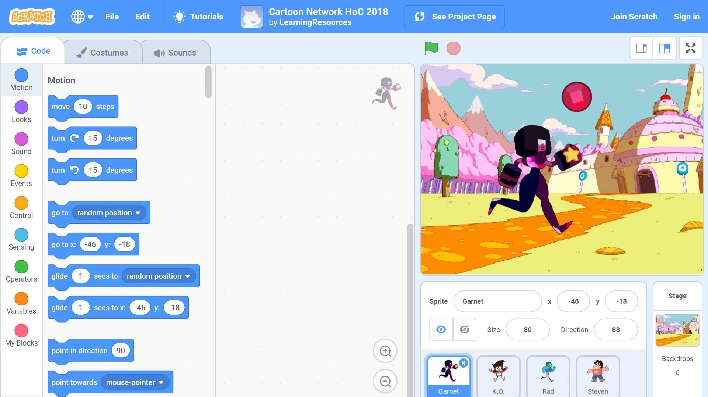

Introduction About It :
Scratch was developed in the laboratories of (MIT) International, a specialist in the fields of programming and computer. his is for educational educational goals that enable students to learn and express their capabilities through modern technologies. So far, students, users of Scratch around the world have developed more than 11 million programs, which they publish on the official Scratch.mit.edu website.
There are difficulties at secondary levels for students in understanding programming, especially object programming (object-oriented programming). Therefore, early and simplified learning of this type of programming would prepare the new generation for the next stage. The student learns through this booklet basic programming concepts such as repetition and conditions, as well as more complexconcepts such as objects and blocks, as well as to important mathematical concepts and ideas suchas coordinate system, variables and random numbers. All this through an educational system in an interesting and meaningful framework. This pamphlet contains activities and tasks that guide the learner towards these concepts in interesting ways.
basic programming concepts such as repetition and conditions, as well as more complexconcepts such as objects and blocks, as well as to important mathematical concepts and ideas suchas coordinate system, variables and random numbers. All this through an educational system in an interesting and meaningful framework. This pamphlet contains activities and tasks that guide the learner towards these concepts in interesting ways.
What is MIT :
The Massachusetts Institute of Technology or Massachusetts Institute of Technology, known as MIT, is a university in Cambridge, Massachusetts, founded in 1861. This institute is a world-class institute. The institute has employed many great scholars such as Norbert Wiener; its primary mission is education and research in the practical applications of science and technology, and the institute is divided into five schools and one college that contains 34 academic disciplines and 53 laboratories. The institute played a major role in biomedical engineering, in the development of computers, and in the navigation devices used in missiles and spacecraft. It has 10,000 students of multiple nationalities. The Institute's 960 faculty are known for excellence and excellence in advanced technical research and applications, with 85 of them being awarded the Nobel Prize.
What can you do :
In the Scratch program, interactive stories, animations, music and art games, and other computerized creations can be developed. Scratch enables the user to enter images, sounds and video, and also makes changes to them and control them. Scratch depends on the program's input objects, as the objects can be text, images or graphics.

These objects can be programmed by inserting code blocks - the so-called "blocks" - into these objects and specifying data for these programming commands, which in turn leads to the ability to change the shape, movement or sound of these objects. Controls of these objects are programmed through commands related to pressing a keyboard (such as pressing the arrows), mouse (such as double-clicking the mouse button) or after a specified period of time (such as 5 seconds). This interesting mix produces a consistent computer program that stimulates the user towards excellence and creativity in developing ideas to the implementation.